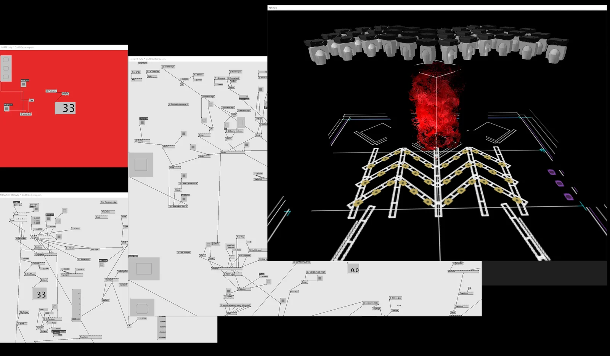
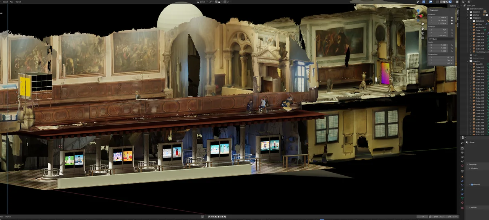
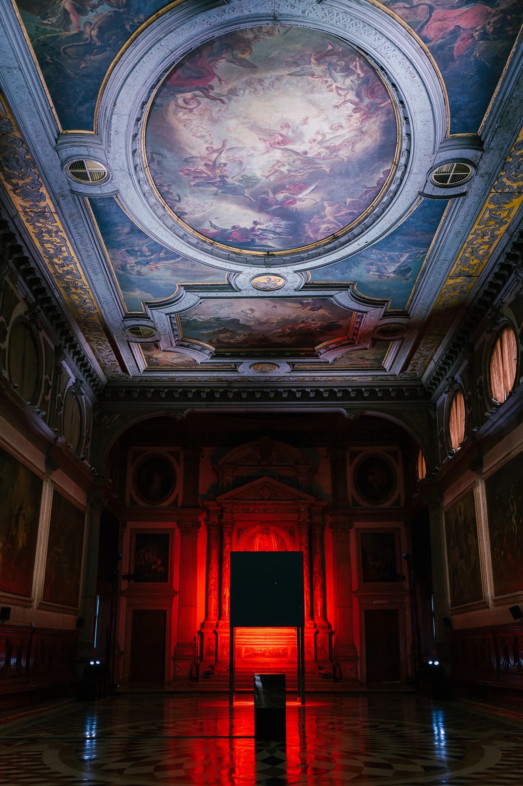
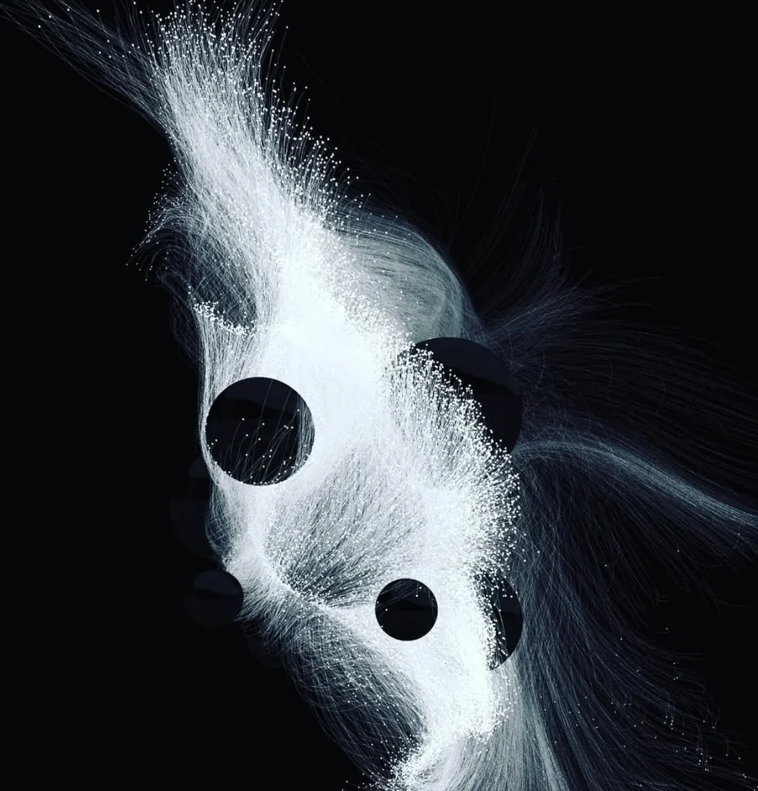
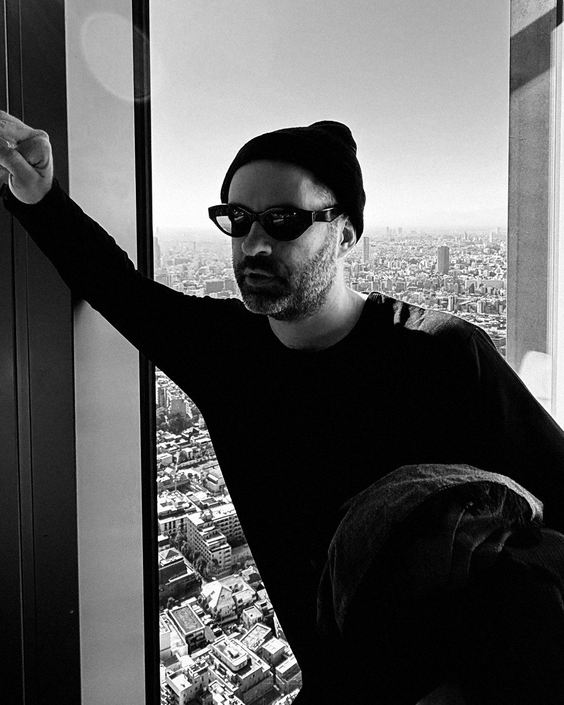
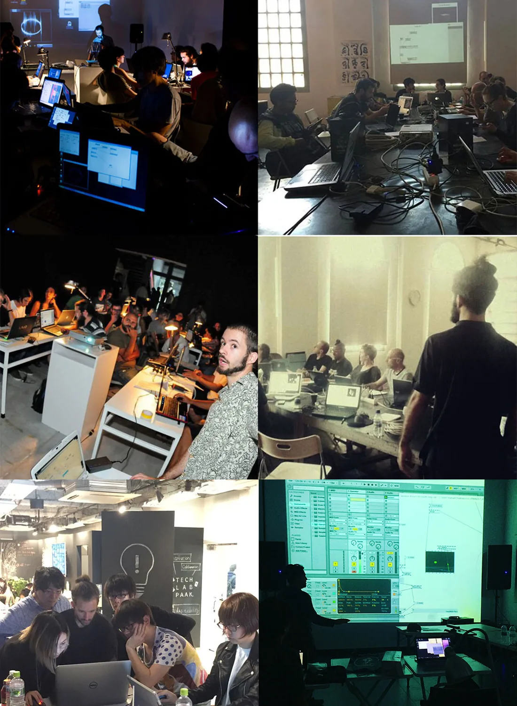

01 / Context
The new creative
reality
From execution
to orchestration.
AI assistance has become an operational standard across creative industries. Education must move from software adaptation to architectural mastery.
Creative practice is shifting from isolated manual execution to the dynamic orchestration of systems. When AI expands technical reach, individual creators and students gain the architectural capacity to build complex real-time environments once reserved for entire production teams.
Technical adoption alone is not enough. Universities and media labs must cultivate critical and reflexive capacity—ensuring students interrogate the cultural, aesthetic, and structural implications of this paradigm shift rather than chasing surface trends.
Professional Ubiquity
Fluency with integrated AI systems is now expected across contemporary studios, exhibitions, and live production pipelines.
System Orchestration
Designing pipelines, data flows, and real-time rules that bridge poetic intention with responsive execution.
Reflexive Agency
Grounding AI practice in Creative Coding and Generative Art lineage so technology remains in service of authorship.
02 / Framework
Objectives
& formats
Methodology over
software presets.
The curriculum teaches tool-building and system architecture—adapting AI coding partners to whichever creative stack each student works in.
Conceptual Fluency
Reading the AI landscape beyond hype, anchored in Creative Coding and Generative Art history as informed architects.
Code Assisted
Directing AI agents and MCP as coding partners to write shaders, Python scripts, and real-time logic without syntax bottlenecks.
Stack Agnostic
Methods transferable across TouchDesigner, vvvv, Blender, Unity, WebXR, and hybrid sound-light environments.
- Formats
- 30–90 min Talk / Lecture · 1–2 Day Intensive Workshop · Full 5-Module Course / Visiting Seminar
- Audience
- Undergraduate, graduate, and interdisciplinary practitioners across design, media arts, and code
- Environment
- TouchDesigner, vvvv, Blender, Python, WebXR, AI coding agents, and Model Context Protocol (MCP)
- Outcome
- Custom tool-building workflow and functional spatial prototype presented in an open system critique
03 / Curriculum
Five architectural
modules
From immersive landscape
to spatial synthesis.
A progressive studio arc moving from field survey and AI agent orchestration to bespoke pipelines and spatial installation design.
Immersive Frontiers
Mapping spatial design and its current intersection with AI.
AI Agents & Code
Directing LLMs, Python, shaders, and MCP workflows.
Custom Pipelines
Tailored studio architectures and 3D digital twins.
Spatial Design
Translating digital systems into rooms, AR/VR, and light.
Project Synthesis
Final integration and critique focused on system process.
Map the intersection between contemporary Immersive Design, Generative Art, and Artificial Intelligence.
Survey large-scale spatial installations, WebXR, and AR ecosystems to pinpoint where Creative Coding and AI assistance directly amplify each student's concept.
Demystify programming through AI Agents and the Model Context Protocol (MCP) to build bespoke creative tools.
Direct LLMs as technical partners to generate Python scripts, shaders, and visual logic inside TouchDesigner or vvvv—turning students into technical directors of their own code.
Move beyond templates and presets by engineering custom production workflows modeled on commercial studio architectures.
Build modular node graphs, real-time parameter routing, and 3D digital twin pre-visualization systems ready to scale to physical exhibitions and live stages.
Translate digital assets and generative logic into physical, perceptual spatial experiences.
Examine how digital media inhabits architecture across AR, VR, LED walls, projection, and DMX lighting—designing works that alter physical perception.
Integrate custom-built tools into a coherent immersive project where AI functions as structural architecture rather than surface decoration.
Final presentation and structured critique evaluating the underlying process, system design, and spatial execution alongside the visual artifact.




04 / Institutional Value
Curricular
impact
Expanding the
academic horizon.
Creative Operations
Introduces System Design and Creative Operations as core artistic competencies within contemporary studio pedagogy.
Future-Proofing
Prepares students for a landscape where orchestrating creative systems is as vital as executing individual artifacts.
Hybrid Reach
Unites designers, visual artists, musicians, and software developers inside a shared interdisciplinary studio environment.
“Manuel is an outstanding artist who explores not only the potential of technology but also the richness of humanity and nature. He has conducted creative coding workshops for young people in Shibuya, Tokyo—and as a bridge connecting the global creative scene with students, someone like Manuel is an extremely valuable presence.”
05 / Manuel Palenque
Director of Immersive, Superside
Founder, Dataraiz
& Black Cycle
Industry scale and
artistic practice.
Visual artist, electronic musician, and creative technologist with over 15 years of experience in real-time audiovisual performance and interactive installations. He currently serves as Director of Immersive at Superside, leading immersive design and AI workflows for global clients including Google, Reddit, Meta, and Microsoft, and previously worked as Technical Video Director for Fuerza Bruta.
Alongside his commercial and artistic practice, he directs Dataraiz—an art, science, and technology media lab in Buenos Aires—and founded the Black Cycle festival at ArtHaus. He has performed and taught internationally across Tokyo, Hong Kong, Berlin, Venice, Barcelona, and Buenos Aires.
- Industry
- Director of Immersive at Superside · Projects for Google, Reddit, Meta & Microsoft
- Artistic Practice
- MUTEK Buenos Aires · Bright Moments (Venice & Worldwide) · SuperDeluxe / Beyond Code (Tokyo) · CityU School of Creative Media (Hong Kong) · Tecnópolis · Telenoika (Barcelona) · Fuerza Bruta
- Pedagogy
- NODE Festival (Berlin) · TECH LAB PAAK (Tokyo) · School of Creative Media (Hong Kong) · UNTREF (Buenos Aires) · Espacio LAB (Bogotá)
- Lab & Festival
- Founder of Dataraiz and Black Cycle

